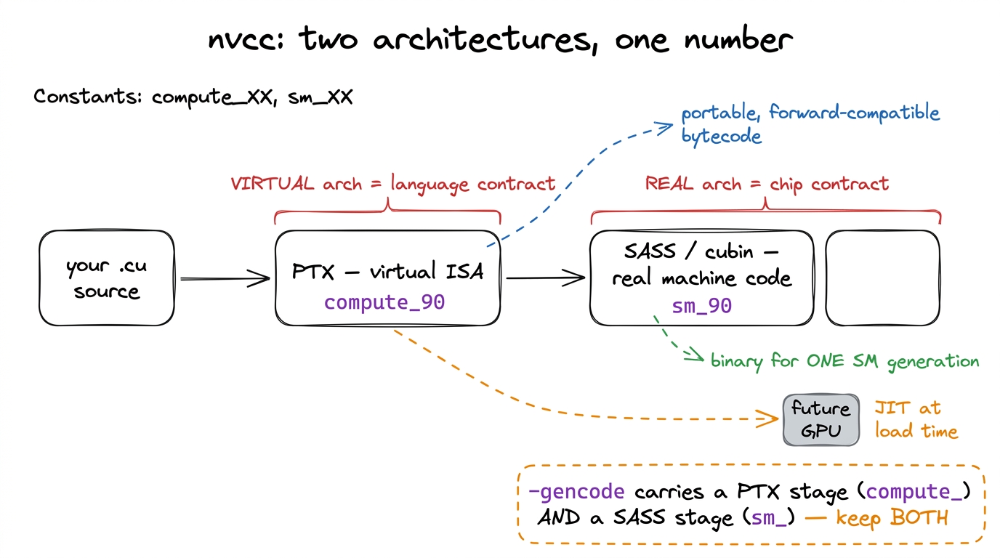
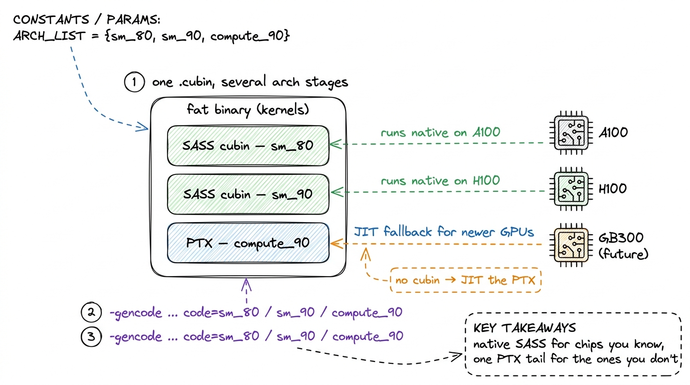
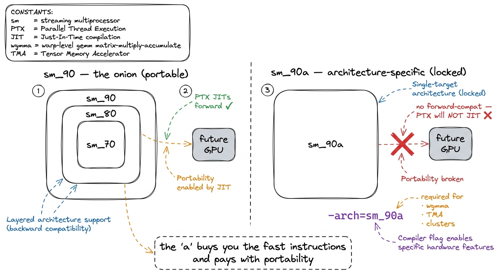
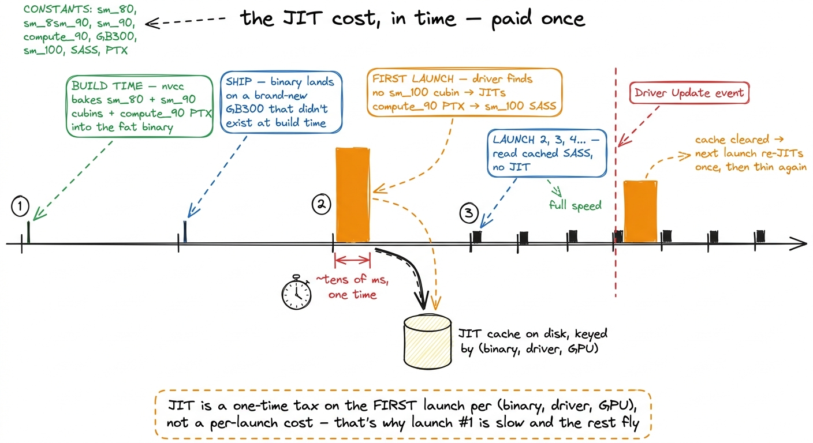
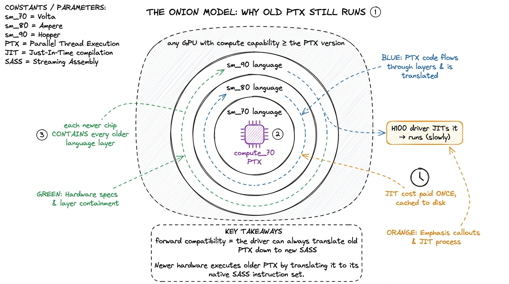
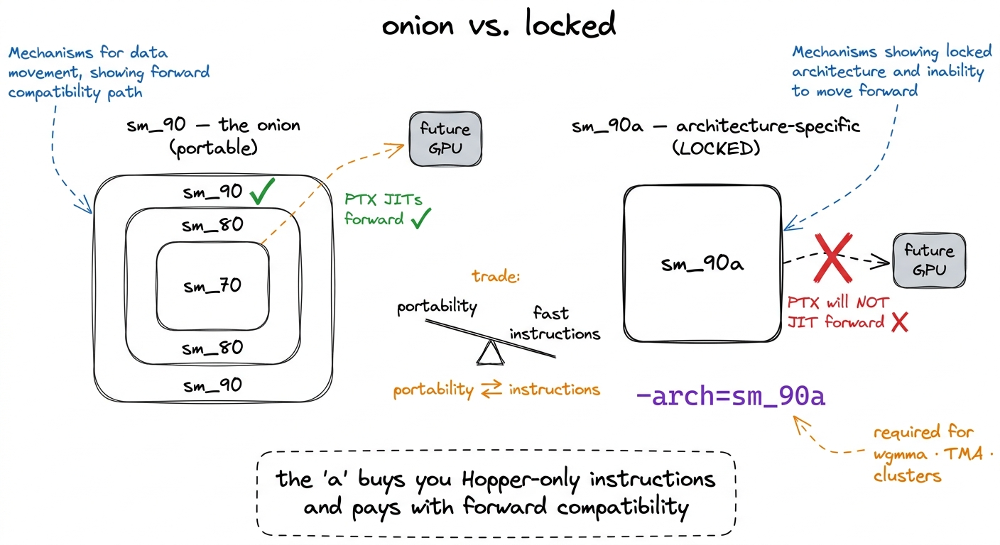
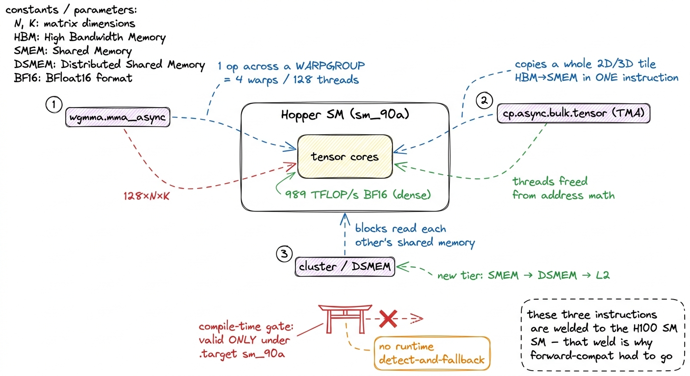
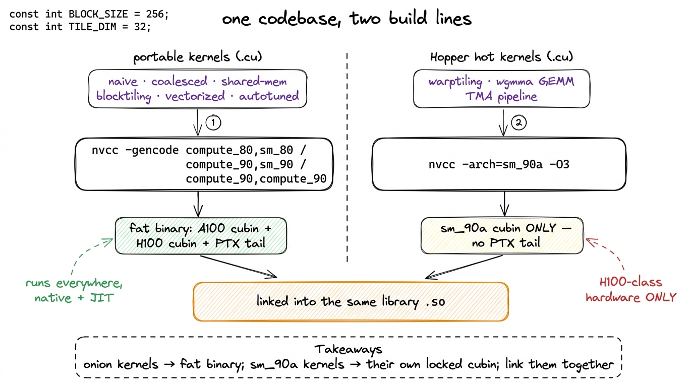

Compute capability & targeting
Every kernel we write in this course eventually reaches the same quiet, boring fork in the road. The source is done. It compiles. And now we have to tell nvcc one small thing: what chip are we compiling for? It feels like a formality — the kind of flag you copy from a Makefile and never think about. But it is not a formality. Get it wrong and one of exactly two things happens. Either the compiler flatly refuses an instruction you know the hardware supports — you ask for wgmma on an H100 and it says no such instruction — or, worse, it silently builds something that runs, and runs correctly, but runs the old way, leaving half your very expensive silicon dark and you none the wiser.
This article is about the small pile of flags that decide that, and — more importantly — the mental model underneath them. Because on Hopper that model grew a sharp edge you can cut yourself on, and it hides inside a single letter: the a in sm_90a.
Let me state the question this whole article answers, plainly, up front: when I type nvcc -arch=sm_90, what am I actually promising the compiler, and why does adding one letter — sm_90a — change the rules of the game? Everything below is an answer to that. If you have never compiled a .cu file in your life, that is fine. We are going to build it from the ground.
First, why is there a flag at all?
Start with the most naive possible question, the one nobody asks out loud because it sounds too simple: why do I have to tell the compiler what GPU I have? Doesn't it just know? My laptop compiler never asks me which exact CPU I own.
That instinct is right, and the fact that GPUs break it is the whole story. So let's sit with it.
When you compile a normal C program for your Mac, the compiler emits machine code — actual bytes the CPU decodes — for one instruction set, x86-64 or ARM64, and that instruction set has been stable for decades. Intel and AMD go to enormous lengths to keep old binaries running on new chips. A program compiled in 2010 still runs today. The instruction set is a fixed, public contract, and everyone builds against it.
GPUs made the opposite bet. NVIDIA changes the actual machine instructions of the GPU almost every generation. The real binary code an H100 runs is not the same as what an A100 runs, which is not what a Turing card runs. Tensor cores appeared, then changed shape three times. New memory instructions showed up. If NVIDIA had frozen the instruction set the way Intel froze x86, none of that could have happened — you can't invent a wgmma if you promised binary compatibility with a chip that had never heard of tensor cores.
So NVIDIA needs the freedom to change the metal, but it also needs your code to keep running. Those two goals fight. The entire compute-capability system — two architectures, PTX, SASS, JIT, fat binaries, all of it — is the machinery NVIDIA built to have both. Once you see it as the resolution of that one tension, every flag stops being arbitrary.

figure rendering · The whole compute-capability system exists to resolve one tension: NVIThe fix, drawn in that figure, is the mental model we will reuse for the rest of the article, so let me name it clearly and keep coming back to it. NVIDIA split the problem into two layers: a stable language that your code is written in, and a swappable machine code that the actual chip executes. The language survives across generations. The machine code is regenerated per chip. Hold that two-layer picture in your head. Every flag we meet is just naming one of those two layers.
Two architectures wearing one number
Here is the first thing that trips people up, and it tripped me up too. nvcc deals in two different notions of "architecture," and they are deliberately, confusingly, spelled with the same number.
The two layers from the figure have names.
The upper layer — the stable language — is the virtual architecture, written compute_XY. Think of it as a contract about a language. It says: here is the exact set of instructions and features you are allowed to assume exist. That language is PTX — Parallel Thread eXecution — NVIDIA's virtual instruction set. PTX is not what the hardware runs. It is closer to a portable bytecode: a forward-compatible, assembly-flavored intermediate representation that describes what to do without committing to which chip does it.1 The cleanest analogy is Java. PTX is to a GPU what JVM bytecode is to a CPU — a portable intermediate form that gets translated to real machine code later. The thing the SM actually executes is SASS, and SASS is undocumented, versioned per architecture, and can change between driver releases. We disassemble it constantly on this course to check the compiler's work, but we never hand-write it.
The lower layer — the swappable machine code — is the real architecture, written sm_XY. This is a contract about a chip. It says: assemble the whole way down to SASS (the actual binary machine code for one specific Streaming Multiprocessor generation) and bake it into the output as a cubin — a compiled binary blob. sm_90 is the physical H100 SM. sm_80 is the A100. sm_75 is a Turing card. A cubin built for sm_90 is bytes an H100 can decode directly and bytes an A100 cannot.
And the XY shared by both? That is the compute capability itself: a major.minor version number that is the whole point of the abstraction. It lets NVIDIA describe "which language / which chip" with one number instead of a marketing name. 9.0 is Hopper. 8.0 and 8.6 are Ampere flavors. 7.5 is Turing. 10.0 is Blackwell. The major number tracks a microarchitecture family; the minor number tracks a revision inside it. So when a spec sheet says "the H100 is compute capability 9.0," that number is the thing you type after compute_ or sm_ on the command line.
Say it back to yourself once, because the naming is genuinely the hardest part: compute_90 is the language, sm_90 is the chip, and 9.0 is the version number they share. The rest of this article is mechanics; that sentence is the concept.

figure rendering · The compile splits into a virtual PTX stage and a real SASS stage; theNotice the shape of that pipeline: source → PTX → SASS. Every compile walks that path. The flags just tell nvcc where to stop and what to keep. That is the next thing to understand.
Walking the pipeline by hand
Let me make this concrete with the tiniest possible example, so no number comes from the sky.
Suppose I write a one-line kernel that adds two numbers, and I run nvcc -arch=sm_90 add.cu. Trace what happens, stage by stage:
nvccparses my CUDA C++ and lowers it to PTX targeting thecompute_90language. This PTX is text — you can literally open it. It contains virtual instructions likeadd.f32that any Hopper-or-newer chip understands as a language, but that no chip executes directly.- Then
nvccruns a second compiler,ptxas, which takes thatcompute_90PTX and assembles it down to SASS forsm_90— the real H100 machine code. This is where virtual registers get assigned to the SM's 65,536 physical registers, where instructions get scheduled for Hopper's actual issue ports, where the machine code truly forms. - Both artifacts — the PTX and the SASS cubin — get wrapped into the output binary.
So even a plain build produces two things: a chip-specific cubin, and the portable PTX it came from. Keep that in mind — the presence or absence of that trailing PTX is what the whole forward-compatibility story turns on, and it is exactly the thing the different flags decide.
Why keep the PTX at all, if we already have native SASS for the chip we named? Because of what happens on a chip we didn't name. That is the next section. But first, the flags themselves.
The flags, decoded
There are two ways to spell the target, and you will meet both in real build systems, so let's see both.
The shorthand is -arch:
nvcc -arch=sm_90 gemm.cu -o gemm-arch=sm_90 is really a convenience macro. It tells nvcc: compile through the compute_90 virtual architecture and down to the sm_90 real architecture. And here is a detail that surprises people — the standalone -arch=sm_XY shorthand also quietly keeps a compute_90 PTX stage. It expands to roughly arch=compute_90,code=[sm_90,compute_90]. So the shorthand hands you native SASS for the H100 plus a forward-compat PTX tail, for free. Fast to build, small binary, runs natively on the chip you named, and can still limp onto newer ones via the tail.2 If you want SASS with no PTX tail — a build truly locked to one chip — you have to be explicit: -gencode arch=compute_90,code=sm_90 with no compute_ in the code= list. The opposite extreme, -arch=compute_90 (virtual only), embeds only PTX and no SASS at all, forcing a JIT compile on the first launch for every target. Maximally forward-compatible, painful startup latency.
The full form is -gencode, and it is the one you actually want in anything you ship, because it lets you carry several targets inside one binary — a fat binary:
nvcc \
-gencode arch=compute_80,code=sm_80 \
-gencode arch=compute_90,code=sm_90 \
-gencode arch=compute_90,code=compute_90 \
gemm.cu -o gemmRead each line as arch=<virtual language to compile through>,code=<what to actually emit>. This is the moment the two-layer model pays off, so let's read all three lines slowly:
- Line 1,
code=sm_80: emit a real SASS cubin for Ampere. Runs natively on an A100. No JIT. - Line 2,
code=sm_90: emit a real SASS cubin for Hopper. Runs natively on an H100. No JIT. - Line 3,
code=compute_90: herecode=is itself acompute_target, which tellsnvccto stop at the PTX layer and keep that PTX in the binary. This is the insurance policy. It is the entire mechanism behind forward compatibility, and we're about to see it fire.
Two native cubins for the chips I know, one PTX stage for the chips I don't. That's the whole idiom.

figure rendering · A fat binary carries a native SASS cubin per known chip plus one PTX sForward compatibility, and the onion
Now the payoff. Here is the promise NVIDIA has historically made, and it is a genuinely good one.
PTX is forward-compatible under what NVIDIA calls the onion model: PTX generated for compute_X.Y will run on any GPU with compute capability ≥ X.Y. How? The driver — not nvcc, the driver installed on the machine — ships its own JIT compiler. The first time a kernel is loaded on a chip that has no matching cubin, the driver reaches for the embedded PTX and translates it down to whatever SASS the actual installed GPU wants, right then, at load time.
Let's make that concrete, because "JIT at load time" sounds expensive and you should know exactly how expensive. When your GB300 (which shipped after your binary was built) tries to launch a kernel, the driver scans the fat binary for an sm_100 cubin, finds none, falls back to the compute_90 PTX, and JIT-compiles it to sm_100 SASS. That translation takes real milliseconds. But — and this is the part that makes it livable — the result is cached on disk, keyed by the (binary, driver, GPU) tuple. So you pay it once, not once per launch.
This, by the way, is the answer to a mystery every GPU engineer eventually hits: why is the very first kernel launch after a driver update mysteriously slow, then never slow again? Now you know. The driver update invalidated the JIT cache, so the first launch re-JITs the PTX; the second launch reads the cached SASS. That slowness is the onion doing its job.

figure rendering · The JIT translation is a one-time wall-clock tax on the first launch aSo a binary you built years ago with a compute_70 PTX stage will still run on an H100 today. It will not run well — a JIT can only translate the instructions the PTX actually contains, and old PTX cannot invent tensor-core operations that didn't exist when it was written — but it runs and produces correct answers. That "runs but not well" is the onion's exact guarantee: each newer hardware layer contains the older language layers, like rings of an onion, so old PTX always finds a translation, even a slow one.

figure rendering · Newer GPUs contain every older language layer like onion rings, so theThis is why the -gencode idiom ended with that compute_90 PTX line. Your native SASS cubins cover today's chips at full speed; the PTX tail covers tomorrow's chips at JIT speed. It is a cheap, elegant insurance policy, and for the entire history of CUDA it Just Worked.
And then Hopper broke it on purpose.
The onion that Hopper broke: sm_90a
Here comes the sharp edge, and it is the reason this article exists as its own page instead of a footnote.
Hopper introduced sm_90a. That a suffix stands for architecture-specific, and it deliberately breaks the onion. PTX built for an a target is not forward-compatible. It is not promised to JIT onto any future architecture. NVIDIA says this in the docs in plain language: the a variant "includes features deviating from the traditional onion-layer model," and compatibility within a major version is no longer guaranteed.3 Blackwell added a parallel f suffix (e.g. sm_100f, "family-specific") with its own, looser rules — it uses a semantic-versioning idea where compatibility holds across minor versions but not major ones. So the taxonomy now has three tiers: plain sm_XY is the portable onion, a is welded to one architecture, f is welded to one family. For this H100 course only sm_90 vs sm_90a matters.
Stop and feel how strange this is. NVIDIA spent twenty years building forward compatibility as a headline feature — and then shipped a target that throws it away. Why on earth would they do that?
Here is the natural next question, and it's the right one: what could possibly be worth giving up the single best property of the whole system? The answer is: some instructions are simply too welded to the physical layout of one specific SM to honestly pretend they are portable. If NVIDIA promised that a wgmma would JIT forward onto a future chip, they would be lying, because a wgmma is defined in terms of Hopper's exact tensor-core geometry, its exact shared-memory descriptors, its exact warpgroup wiring. There may be no faithful translation onto a chip built differently. So rather than promise a lie, NVIDIA drew a hard line: these instructions live only under sm_90a, and code that uses them does not travel. Honesty over convenience.

figure rendering · Plain sm_90 stays inside the forward-compatible onion; sm_90a leaves iThat trade — portability for raw speed — is exactly the right trade for a kernel whose entire reason to exist is a Hopper instruction. If your kernel is built around wgmma, you were never going to run it on a non-Hopper chip anyway. There is nothing to give up. The lock-in is free.
Why sm_90a exists: the three instructions that need it
So which instructions are worth all this? The features that make the very top of our GEMM ladder possible are all Hopper-native and all gated behind the a target. There are three, and they matter enough that we have whole articles on them; here is the compressed why.
wgmma — warpgroup matrix-multiply-accumulate. Earlier mma instructions worked one warp at a time (32 threads). wgmma issues a single asynchronous tensor-core operation across an entire warpgroup — four warps, 128 threads at once. Why does that shape matter? Because the H100's tensor cores are so fast (989 TFLOP/s of BF16, dense) that a single warp cannot generate matrix-multiply work quickly enough to keep them fed. You need 128 threads issuing as one unit to saturate the core. The instruction's shape is dictated by the physical throughput of the metal — which is precisely why it cannot be portable.
TMA — the Tensor Memory Accelerator. A dedicated hardware engine that copies a whole multidimensional tile between HBM and shared memory with one instruction and an address descriptor. On earlier chips, every thread computed its own load address — hundreds of threads doing integer address math just to move data. TMA hands that entire job to fixed-function hardware and frees the threads to compute. Again: the descriptor format is bolted to Hopper's memory subsystem.
Thread-block clusters and DSMEM. The ability to group thread blocks into a cluster so they can directly read each other's distributed shared memory — a genuinely new tier in the memory hierarchy, sitting between per-SM shared memory and L2. It exists because Hopper physically wired neighboring SMs together in a way earlier chips did not.
Try to compile a kernel using any of these against plain -arch=sm_90 (no a) and nvcc rejects the instruction outright — the plain virtual architecture simply does not define it. Add the a and it compiles. There is no middle ground, no "detect and fall back."

figure rendering · The three Hopper-only instructions — wgmma, TMA, clusters — are gatedThe mechanism, underneath, is simple and worth stating exactly: wgmma, TMA descriptors, and cluster intrinsics are emitted as PTX that is only valid under a .target sm_90a directive.4 This is a compile-time gate, not a runtime one. There is no "if H100, use wgmma, else fall back" that the hardware or driver performs for you. You either built the sm_90a cubin or you did not have the instruction at all. If you want graceful degradation across chips, you write both code paths and pick between them yourself at the C++ level, then compile each for its own target. It is a compile-time gate, not a runtime one — and that is the deepest reason the compatibility guarantee had to be dropped. You cannot promise forward compatibility for an instruction the compiler refuses to even emit unless you name the exact chip.
Let's zoom all the way in: one build line, one translation unit
To make the practical part stick, let me zoom from the whole codebase down to a single file, with the actual choices you face.
Imagine your GEMM library has two kinds of kernels. The early ladder kernels — naive, coalesced, shared-memory, block-tiled, vectorized, autotuned — are written in plain CUDA C++ with no Hopper-only instructions. They can live inside the onion. And the top kernels — the warptiled kernel and everything with tensor cores after it — are built out of wgmma and TMA. They cannot.
The right move is to split the codebase by translation unit. Compile the onion-friendly kernels as a fat binary, and compile the architecture-specific hot kernels separately for sm_90a. Same library, two build lines, drawn below.

figure rendering · Split the library by translation unit: portable kernels build as a fatHere are the two build lines from that figure, spelled out, plus the rules that have never bitten me.
Portable release build — target the real chips, always include a PTX stage. Carry a native SASS cubin per architecture you support, plus one trailing PTX stage for the newest, so future cards still run via JIT:
nvcc \
-gencode arch=compute_80,code=sm_80 \
-gencode arch=compute_90,code=sm_90 \
-gencode arch=compute_90,code=compute_90 \
-O3 kernels.cu -o kernelsHopper fast path — switch to the a target and accept the lock-in. The moment a translation unit contains wgmma, TMA, or cluster code, it must be built sm_90a:
nvcc -arch=sm_90a -O3 gemm_wgmma.cu -o gemm_wgmmaThere is no forward-compatible PTX stage for that unit — there is no such thing for a code — so this binary targets H100-class hardware and only H100-class hardware. Correct trade, as we argued.
Match the build to the deployment, not to your laptop. The single most common failure I see: someone builds for the machine that happened to run nvcc — often via -arch=native, which asks the compiler to probe the local GPU — and then ships to a different card. -arch=native is a lovely convenience for a quick local profile and a footgun for anything you deploy.5 -arch=native is the dangerous one. NVIDIA's docs are explicit that it generates SASS for the detected GPUs and no PTX at all. Move that binary to a newer card and it cannot even JIT-fall-back — there's no PTX to translate — so it fails to load entirely, rather than running slowly. Contrast the plain -arch=sm_90 shorthand, which does keep a PTX tail. Always keep a PTX stage in anything that leaves the machine it was built on.
Don't over-fatten. Every extra -gencode line is another full compile of every kernel and more bytes in the shipped binary. A fat binary with five architectures compiles five times as much SASS. Only include architectures you actually run on — two or three real targets plus one PTX tail is almost always enough. In production, teams like the vLLM and FlashAttention maintainers keep tight, deliberate architecture lists in their build configs for exactly this reason: build time and binary size are real costs, and every sm_XX you add is one you're promising to test on.
Sanity-checking what you actually built
One more practical habit, because "it compiled" is not the same as "it built what I meant." You can inspect any binary and see exactly which cubins and PTX stages it carries:
cuobjdump kernelsThis lists every embedded SASS cubin by architecture and every PTX stage. If you expected an sm_90 cubin and a compute_90 PTX tail and you only see one of them, your build line was wrong. When I'm chasing a "why is this slow on the H100" bug, this is the first thing I check — more than once the answer was that the binary had only a compute_80 PTX stage, so the H100 was silently JIT-ing Ampere PTX and never touching a single Hopper instruction.6 You can also verify at runtime from inside CUDA: query cudaDeviceProp::major and minor for the compute capability of the GPU you're actually on, and check it against what you built for. A cudaErrorNoKernelImageForDevice at launch is the runtime's way of telling you the binary has neither a matching cubin nor JIT-able PTX for this card — almost always an -arch=native binary that wandered onto the wrong GPU. That single cuobjdump line has saved me hours of profiling a kernel that was never running the code I thought it was.
The bridge
Let's tie the whole knot with the two-layer model we started from. There is a stable language (PTX, named by compute_XY) and a swappable machine code (SASS, named by sm_XY). -gencode lets you carry several of each inside one fat binary. A trailing compute_ PTX stage is your forward-compatibility insurance — the driver's JIT can always translate it down onto a future chip, correctly if not quickly, cached to disk after the first time. That is the onion, and for most of CUDA history it was the whole story.
Except on Hopper's sm_90a, where you deliberately trade that insurance away — because wgmma, TMA, and clusters are welded to the physical H100 SM, and welded instructions cannot honestly promise to travel. One letter, and you leave the onion behind.
Which means we now hold the key to the door. Everything up to kernel 7 on the ladder — through the vectorized and autotuned kernels — compiles happily against plain sm_90, stays inside the onion, and ships in a fat binary that runs anywhere from Ampere forward. But the warptile kernel that finally reaches 93.7% of cuBLAS, and every tensor-core kernel after it — the ones built on wgmma and TMA — are sm_90a code by necessity. Before we could write a single wgmma, we had to understand why the build line needs that one extra letter, and what it costs. Now we do. The underlying split between PTX and SASS that made all of this possible has its own article — PTX vs SASS — and the streaming multiprocessor those instructions are welded to has one too. Go spend the compute the way the three regimes told us to.